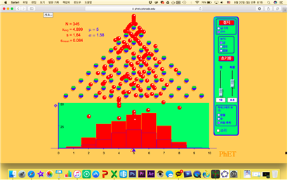

소프트웨어를 사용한 수학수업
공학적 도구는 자칫 지루하고 단조로워지기 쉬운 수학 수업을 학생들이 흥미를 느낄 수 있는 수업으로 탈바꿈 해주는 좋은 도구이다. GSP나 지오지브라 혹은 안드로이드, iOS에 맞추어 제작된 여러 교육용 어플리케이션을 이용하면 수업을 더 풍성하게 꾸밀 수 있다. 또한 판서로는 경험하기 힘든 시각적 요소들을 이용해 여러 개념들을 효과적으로 이해시킬 수도 있다. 이에 필자가 수업에 사용했던 몇몇 소프트웨어를 소개함으로써 독자들에게 자그마한 도움을 주려고 한다. 한 가지 분명히 할 점은 필자가 이 글을 통해 전하려고 하는 것은 소프트웨어를 어떻게 사용하느냐 하는 기능적인 부분의 조언이 아니다. 소프트웨어를 다루는 능력 자체의 문제는 인터넷 소개된 여러 게시물을 보고 따라하면서 얼마든지 해결할 수 있는 문제다. 필자는 이 글을 통해서 소프트웨어를 이용해 어떻게 수업을 구성할 수 있는지, 또 그에 따른 장점이 무엇인지에 대해 이야기하고 싶은 것이다. 교육 현장에서 대부분 수학 교사들이 공학적 도구를 거의 사용하지 않고 판서만으로 수업을 진행하는데, 개인적인 생각으로는 공학적 도구를 사용할 능력이 없어서라기보다는 그렇게 수업을 구성하는데 따르는 노동과 시간을 투자하고 싶지 않아서라고 생각된다. 그렇기에 공학적 도구를 수업에 사용하면 어떤 장점이 있으며 그 필요성은 무엇인지 설명하는데 대부분의 초점을 맞출 것이다.
또한 이야기를 진행하기 전에 밝히고 넘어갈 점은 필자는 주로 맥OS를 사용한다는 것이다. 맥북 에어 2013년형 모델을 사용해 수업을 하는 경우가 보통이기 때문에 이 점을 참고하고 이 글을 읽어주면 좋겠다. 소개하게 될 대부분의 소프트웨어들은 윈도우 환경에서도 사용할 수 있는 것들이기 때문에 크게 문제 될 것은 없다.
(1) 프레젠테이션 도구
교사들이 수업할 때 사용하는 가장 기본적인 도구가 아닌가 싶다. 사실 수학 수업에서는 파워포인트나 키노트와 같은 프레젠테이션 도구가 반드시 필요한 것은 아니다. 하지만 개인적인 경험에 비추어 보았을 때는 프레젠테이션 도구를 사용해서 설명할 때 더 효과적인 때가 분명 있다. 아래 문제는 2009학년도 6월 수리나형 평가원 모의고사에 나온 수열 문제다.
간단히 설명하자면 자연수 에 대해 초에는 번째까지의 줄에 있는 전구에 불이 들어오고 초에는 번째까지의 줄에 있는 전구에 불이 들어온다. 특정 시간이 될 때까지 불이 들어오는 전구의 수의 합을 구하는 문제인데 수학에 자신이 없는 학생들은 매우 어려워하는 문제였다. 수열의 합을 구하는 단계까지 나아가지도 못했고, 문제의 상황을 이해하는 것 자체를 어려워했다. 그래서 맥용 프레젠테이션 도구인 키노트를 이용해 문제가 어떤 상황인지를 시각적으로 보여주고 문제를 해결하게 했고, 대부분의 학생들이 문제의 상황이 어떤 것인지는 이해할 수 있게 되었다.

이 외에도 어떤 변화나 움직임등을 시각적으로 표현하고자 할 때 프레젠테이션 도구는 간단하면서도 유용하게 사용되는 경우가 많았다.
(2) GSP
중학교에 재직할 당시에 가장 많이 사용했던 소프트웨어이다. 현재 GSP5까지 나온 상태이며 필자가 구매할 당시에 93달러 정도에 구매했었는데 이는 맥OS용으로 나온 GSP를 구매했기 때문이고 윈도우 환경에서 사용하는 GSP5는 수학사랑 인터넷 사이트에서 6만 원에 구매할 수 있다. 교육 목적으로 여러 소프트웨어를 한꺼번에 구매할 때는 더 저렴하게 구매할 수 있다. 이 소프트웨어는 중학교 기하 단원을 설명할 때 딱 알맞은 소프트웨어다. 이 소프트웨어를 사용해서 해석 기하의 내용을 설명하는 것은 비교적 어렵지만 여러 기본 도형을 보여주고 작도의 경험을 제공해주는데 있어서 이만한 소프트웨어를 찾기 힘들다. 자와 컴퍼스만으로 도형을 그려내는데 의미가 있는 작도 수업은 유클리드의 기하학을 이해하는 기본이 되는 중요한 내용이지만 수업을 어떻게 의미 있게 꾸려야 할지 생각해보면 굉장히 막막한 수업이기도 하다. GSP5가 이러한 어려움에 의미 있는 도움을 줄 수 있을 것이다.
점을 찍고, 선분을 그리거나 원을 그리는 가장 기본적인 작도 행위를 기반으로 선분의 분점도 쉽게 그릴 수 있고, 수선을 그리거나 대칭점을 잡는 것도 쉽게 할 수 있다.

작도 수업에 직접 사용했을 때는 가능하면 모든 학생들에게 이 소프트웨어를 제공해주고 작도 수업을 하면 정말 좋을 것 같다고 생각했지만 여러 현실적 여건 때문에 그렇게 할 수는 없었고, TV 화면에 띄워 작도 과정을 보여주고 몇몇 학생들에게만 체험하게 해주는 것으로 만족해야 했다. 평소에 수학에 많은 관심을 가지고 있던 학생들이더라도 직접 자와 컴퍼스를 가지고 작도를 해본 경험은 거의 없다. GSP5는 컴퓨터만 준비 되어 있다면 평소에 하기 힘든 실질적인 작도의 경험을 제공할 수 있다는 점에서 아주 유용한 소프트웨어라고 할 수 있다. 다시 한 번 비슷한 수업을 할 기회가 주어진다면 화면 촬영 소프트웨어를 활용해 학생들에게 작도 숙제를 내주고 콘테스트를 하는 식의 수업을 해보고 싶기도 하다. 작도 수업에의 활용 외에도 함수의 그래프의 개형도 쉽게 그릴 수 있고 애니메이션 기능을 이용해 점이 이동한 자취를 표현하는 것도 가능하다. 가격이 비싸긴 하지만 정말 쉽게 사용할 수 있는 소프트웨어인 만큼 여러 응용이 가능하니 꼭 사용해보기를 바란다.
(3) Good Grapher
이 소프트웨어는 윈도우나 안드로이드 환경에서는 사용할 수 없다는 단점이 있다. 아이폰이나 아이패드, 맥에서만 사용가능한 소프트웨어지만 유용하게 사용한 소프트웨어인 만큼 꼭 소개하고 싶다.
이 소프트웨어는 함수의 그래프를 그리는데 특화되어 있는 소프트웨어이다. 앞서 소개한 GSP5를 이용해도 함수의 그래프를 쉽게 그릴 수 있지만 이 소프트웨어만큼 간편하게 사용하기는 힘들다. 함수의 식만 입력하면 그래프를 얼마든지 그릴 수 있기 때문에 함수 단원에서는 이 소프트웨어 하나만으로 대부분의 그래프 문제를 푸는데 활용할 수 있다. 여러 함수의 그래프가 만나는 교점을 구하기도 쉽고 극대점이나 극소점을 쉽게 찾을 수 있다. 양함수뿐만 아니라 음함수 꼴로 표현된 함수 또는 도형의 그래프, 부등식의 영역을 그릴 수 있고 매개변수 함수나 극형식을 이용한 함수의 그래프도 그릴 수 있다. 필요하다면 3차원 도형 역시도 그릴 수 있다. 수업에 활용할 때는 고등학교 1학년 수학1 수업에서 아주 유용하게 사용했었다. 수업 초반에는 그래프를 어떻게 그리는지 충분히 설명해야하기 때문에 판서를 통해 천천히 설명하고 후에 문제를 풀거나 할 때는 함수의 식을 금방 입력해서 결과를 보여주고 확인시키는 방식으로 판서에 낭비되는 시간을 많이 줄일 수 있었다.
그래프를 많이 그리는 수업이나 기하와 벡터 같이 도형을 그리는데 많은 시간을 들이는 수업의 경우에 쓸데없는 시간 낭비도 많고 그림을 그리는 동안 수업 분위기가 흐트러지는 경우가 많은데 이 소프트웨어를 사용하면 그러한 문제점을 상당 부분 해결할 수 있다.
아이폰이나 아이패드에서는 앱스토어에서 무료로 다운 받을 수 있고 무료 버전도 사용하는데 전혀 어려움이 없다. 필요하다면 유료 버전을 구매해도 괜찮다. 맥에서 역시 앱스토어에서 다운 받을 수 있다.
(4) 지오지브라
교육용 소프트웨어의 끝판왕이라고 할 만한 소프트웨어다. 대부분의 수학 교사들이 한 번쯤은 수업에 사용해봤을 만한 소프트웨어이고 꼭 수업에 사용하지 않더라도 시험 문제를 출제할 때 사용하면 매우 좋은 소프트웨어다.(심지어 무료이다!) 좌표평면 위에서의 함수의 그래프나 도형의 방정식은 물론이고 3차원 공간에서의 여러 도형을 그리는데도 매우 유용하다. 슬라이더 기능을 사용하면 여러 동적 상황을 시각적으로 표현할 수도 있다. 필자도 아직 사용해보지 않았지만 경우의 수나 통계에 활용할 수 있는 기능도 포함되어 있다.
미적분 수업을 할 때는 항상 노트북을 챙겨 다니면서 개념 설명이나 문제풀이에 지오지브라를 사용한다. 아래 그림은 리만합을 이용해 구분구적법을 설명할 때 사용한 자료이다.
구분구적법이라는 개념 자체가 학생들 입장에서 이해하기도 어렵고 교사 입장에서 설명하기도 힘든 개념일뿐더러 제대로 설명하려면 그 복잡한 칠판 판서를 몇 번이나 해야 하는, 수업 준비하기 매우 껄끄러운 개념이다. 하지만 지오지브라를 이용하면 그러한 수고와 시간 낭비를 효율적으로 줄일 수 있다.
구분구적법 외에도 다항함수 및 초월함수의 그래프 그리기에도 매우 유용하게 사용할 수 있고 기하와 벡터 수업에서 3차원 도형을 그리는 데에도 유용하게 사용할 수 있다. 하지만 필자가 생각하는 지오지브라의 장점은 수업에의 활용에만 국한 되어 있는 것이 아니다. 좀 더 현실적인 이야기를 하자면 교사들이 문제를 출제할 때 지오지브라가 정말 큰 힘을 발휘한다. 특히 고등학교 수준의 해석 기하나 기하 문제를 출제할 때는 직접 그래프나 도형을 그려서 확인하지 않는 한 자신이 낸 문제의 답이 맞는지, 혹은 유일한지 확인하는 것이 쉽지 않은 일이다. 이러한 상황에 지오지브라가 매우 유용하게 사용된다. 문제 검증에도 유용하게 사용되지만 시험 출제에 필요한 여러 그래프를 그리는 데에도 아주 편하게 사용할 수 있다. 만약 시험 출제 할 때 문제를 직접 만들어서 출제하려는 교사라면 지오지브라를 무조건 꼭 사용할 것을 추천한다.
지오지브라는 가장 널리 사용되는 수학교육용 소프트웨어이기 때문에 관련한 활용법을 인터넷 검색으로 쉽게 찾을 수 있다. 관련 연수도 많으니 관심이 있다면 꼭 찾아보기를 바란다.
(5) Quincunx 시뮬레이터
아래 그림의 장치가 Quincunx 장치인데 통계학자인 Galton이 이항분포에 대한 연구를 위해 발명하였기 때문에 Galton 상자라고 부르기도 한다. 이항분포 문제나 이항분포와 정규분포의 관련성을 묻는 문제에서 자주 사용되는 장치인데 인터넷을 검색해보면 관련 시뮬레이터를 쉽게 찾을 수 있다. 바로가기

통계 단원이 확률과 통계 단원의 마지막 부분에 소개되어 있고, 수능에서도 공식만 사용할 줄 알면 풀 수 있는 비교적 쉬운 문제로 출제되기 때문에 학생 대부분이 개념을 심도 있게 이해하려고 하기 보다는 어떻게든 문제 유형을 외워서 문제 풀이에만 집중하는 학습 태도를 보이는 경우가 많다. 하지만 실제로는 내용 자체가 이해하기 매우 어렵고 복잡하기 때문에 개념을 제대로 이해하고 있는 학생들이 거의 없다시피 하다. 통계 단원의 경우 확률분포를 직접 구해보고 통계학적 실험의 상황을 차근차근 상상해보아야 개념을 이해하기 편해지는 경우가 많기 때문에 소개한 시뮬레이터가 굉장히 유용하게 사용된다.
위 시뮬레이터를 통해 이항분포에 대해 알아볼 수 있는데, 공이 왼쪽이나 오른쪽으로 떨어지는 확률을 조정하며 이항분포의 평균이 어떻게 바뀌는지도 알아볼 수 있다. 공을 많이 떨어뜨려서 이항분포와 정규분포의 관계가 어떻게 되는지도 알 수 있고 떨어뜨리는 공의 수를 조정하면서 모평균과 표본평균의 관계도 알아볼 수 있다. 통계 교육의 시작부터 끝까지 활용할 수 있는 유용한 시뮬레이터라고 할 수 있다. 다운 받을 필요도 없이 주석의 주소로 들어가면 바로 사용할 수 있다.
이상에서 필자가 수업에 직접 사용해본 여러 가지 소프트웨어를 소개해보았다. 교수자의 입장에서는 이러한 소프트웨어를 사용해 수업을 준비하고 진행하는 것이 귀찮기도 하고 수업 분위기를 어지럽힐 수 있는 위험 때문에 오히려 수업에 도움이 안 될 것이라고 생각할 수 있다. 하지만 그건 어디까지나 수학을 못해본 경험이 거의 없는 ‘교수자의 입장’에서 그렇게 생각될 수 있다는 것이지 학생의 입장이라면 전혀 다를 수 있다. 소프트웨어를 사용한 시각적 경험이 학생들의 인지적 발전에 아주 큰 영향을 끼칠 수 있음을 생각하면 위에 언급된 여러 소프트웨어를 사용한 수업이 분명 큰 의미가 있을 거라고 생각한다.